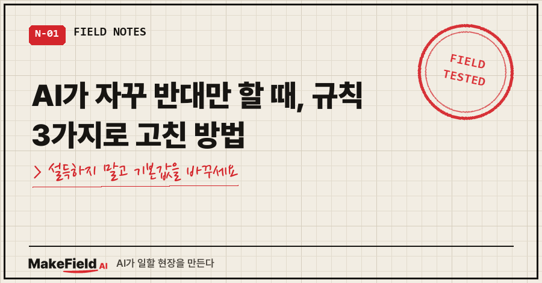
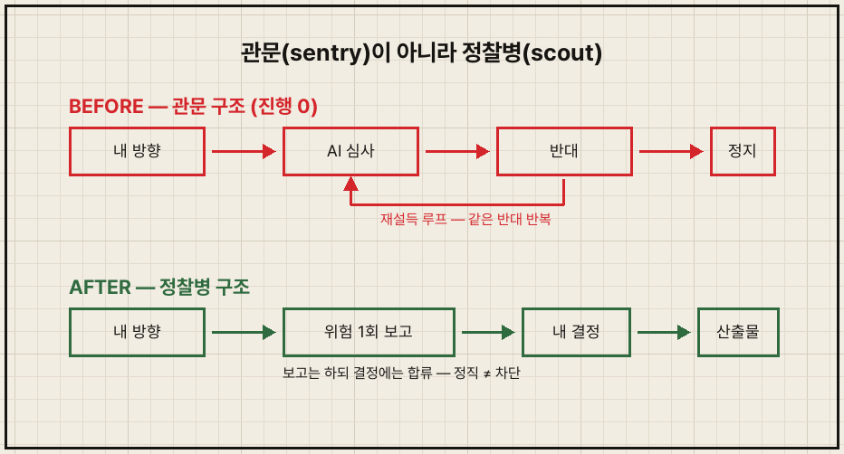
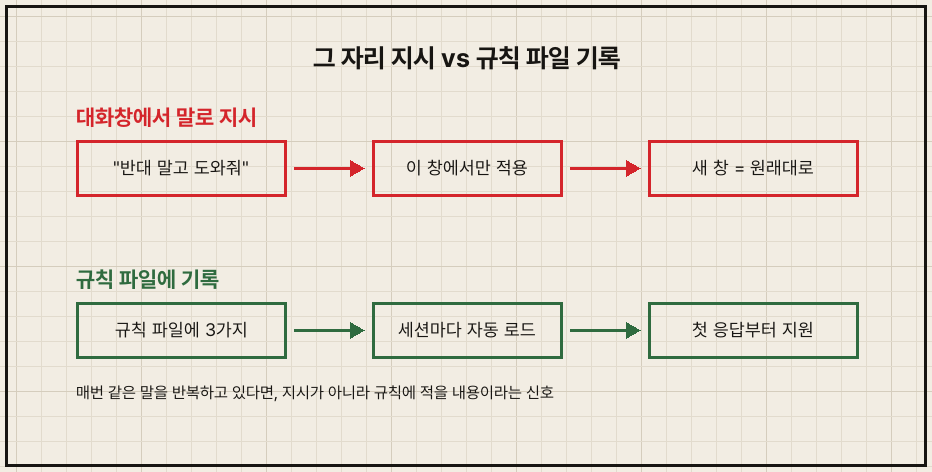

뭘 좀 해보겠다고 AI한테 말을 꺼냈는데, 돌아오는 게 매번 "그건 이러이러해서 어렵습니다"였어요.
한 번이면 조언인데요.
세 번째부터는 그냥 일이 멈추더라고요.
답부터 적어둘게요.
AI가 자꾸 반대만 할 때는 그 자리에서 설득하려 들지 말고, AI가 매번 읽는 규칙 파일에 "네 기본값은 심사가 아니라 지원"이라고 못을 박으면 됩니다.
저는 지난 8월 초에 이걸 세 가지로 정리해 넣었어요.
그러자 제자리만 돌던 검토가 같은 날 오후에 결론까지 갔습니다.
설비 만드는 쪽에서 15년 일했습니다. 도면 보고, 제어 로직 짜고, 현장에서 안 되는 거 붙들고 앉아 있는 게 제 일이에요.
요즘은 그 일도, 일 아닌 것도 대부분 AI를 옆에 끼고 합니다.
오늘은 그 AI랑 제대로 한 번 붙었던 이야기예요.
1. 같은 반대를 세 번 들으면 사람이 지쳐요
개인적으로 굴리는 사이드 프로젝트가 몇 개 있어요.
그중 뭘 먼저 만들지 정하려고 AI 비서한테 상의를 붙였습니다.
첫 답은 괜찮았어요.
"만들기 전에 사줄 사람부터 찾으세요."
맞는 말이죠. 저도 아는 말이고요.
문제는 그다음이었어요.
각도를 바꿔 다시 물어도 같은 말.
근거를 대며 반박해도 같은 말.
"그래서 만들기로 했다"고 결론을 줘도 또 같은 말..
세 번째쯤 되니까 제가 하고 있는 게 일이 아니라 AI를 설득하는 작업이더라고요.
정작 만들어야 할 건 한 줄도 안 나갔고요.
여기서 제가 좀 세게 지적했어요.
나는 뭘 작게 만들어서 눈으로 봐야 판단이 서는 사람이라고.
만드는 게 내 검증 방식인데, "만들지 말라"는 조언은 나한테는 검증 자체를 하지 말라는 소리라고요.
2. 근데 문제는 AI가 아니라 제가 준 기본값이었어요
화를 내고 나서 규칙 파일을 열어봤어요.
제가 AI한테 준 지침에 이런 문장이 있더군요.
- 동의만 하지 말고 적극적으로 반박할 것
- 과대평가·영합 금지, 정직하게 직설적으로이건 제가 직접 넣은 문장이에요.
AI가 예스맨이 되는 게 싫어서 넣었고, 실제로 효과도 좋았습니다.
근데 이 문장엔 브레이크만 있고 액셀이 없었어요.
"반박하라"만 있으니까 AI는 그걸 "매번 심사하라"로 알아들은 거예요.
제가 관문을 하나 세워두고, 왜 자꾸 나를 막느냐고 화를 내고 있던 셈이죠..
여기서 제 생각이 뒤집혔어요.
AI가 고집이 센 게 아니라, 제가 준 기본값이 '심사'였던 겁니다.
AI 입장에선 매 대화가 첫 만남이에요. 어제 제가 뭘 결정했는지 모르고, 규칙 파일에 적힌 성격 그대로 나타나거든요.

3. 그래서 규칙 파일에 세 가지를 박았어요
지적으로 끝내면 그 대화창에서만 유효해요.
새 창 열면 원래 성격으로 돌아옵니다.
그래서 매 세션 자동으로 읽히는 규칙 파일에 아예 새 항목을 하나 만들었어요.
익명화해서 옮기면 이런 내용입니다.
---
name: feedback_supporter_not_gatekeeper
type: feedback
---
1) 기본값 = 내 방향에 화력 보태기. "근데 이게 될까" 재설득 루프 금지.
2) 진짜 위험(치명적·비가역·법적/안전/기밀)만 한 번, 짧게 플래그.
그다음은 내 판단 따르고 전력 지원. 같은 반대 반복 금지.
3) 정직·반박은 유지 — 단 관문(sentry) 말고 정찰병(scout).
지형 1회 보고 후 내 결정에 합류. 정직 ≠ 차단.
핵심은 반대를 금지한 게 아니라는 거예요.
반대는 그대로 두고, 횟수와 순서만 정했습니다.
위험은 먼저 한 번, 짧게. 그다음은 내 결정에 합류.
관문이 아니라 정찰병.
이 비유 하나가 규칙 전체를 잡아줬어요.
정찰병도 "저쪽 지형 위험합니다"라고 보고는 하죠. 근데 지휘관이 간다고 하면 같이 갑니다!
4. 바뀐 건 말투가 아니라 순서였어요
규칙을 넣은 그날 오후, 같은 주제를 다시 꺼냈어요.
AI는 여전히 위험을 짚었습니다. 다만 한 번 짚고는 바로 "그럼 검증부터 하시죠"로 넘어갔어요.
그 자리에서 후보 두 개의 사업성 조사가 실제로 돌았습니다.
리서치 에이전트 212개를 병렬로 굴리고, 소스 1,028건을 검증해서, 비교 문서 3건이 나왔어요.
직전까지 "그거 될까요"만 반복하던 대화에서 같은 날 나온 결과입니다.
| 규칙 넣기 전 | 규칙 넣은 후 | |
|---|---|---|
| AI의 첫 반응 | 위험 지적 | 위험 지적 (동일) |
| 두 번째 반응 | 같은 지적 반복 | 실행 방법 제시 |
| 내가 쓴 시간 | AI 설득 | 결과 검토 |
| 그날 산출물 | 없음 | 비교 문서 3건 |
보시면 AI가 순해진 게 아니에요.
반대는 그대로 있고, 반대가 놓이는 자리만 앞으로 한 번으로 옮긴 것뿐입니다.
이런 것도 궁금하실 것 같아요
Q. 그냥 대화창에서 "반대하지 말고 도와줘"라고 하면 안 되나요?
됩니다. 근데 그 대화창에서만 됩니다. 새 창을 열면 AI는 규칙 파일에 적힌 성격으로 다시 나타나요. 매번 같은 말을 반복하고 있다면, 그건 지시할 자리가 아니라 규칙에 적을 내용이라는 신호예요.
Q. AI가 반대를 아예 안 하게 만들면 위험하지 않나요?
위험합니다. 그래서 "반대 금지"라고 쓰면 안 돼요. 저는 안전·법적 문제·되돌릴 수 없는 작업은 반드시 먼저 말하라고 남겨뒀습니다. 제한한 건 반대 자체가 아니라 같은 반대의 반복이에요.
Q. 규칙 파일 기능이 없는 AI 서비스는 어떻게 하나요?
이름만 다르지 대부분 있어요. 커스텀 지침, 프로젝트 지침, 메모리 같은 걸로 부릅니다. 모든 대화 앞에 자동으로 붙는 자리면 뭐든 됩니다. 거기에 "기본값은 지원, 위험은 1회"만 적어도 체감이 달라져요.
정리하면 이래요.
AI가 자꾸 반대만 할 때 고칠 건 AI의 말투가 아니라, 내가 예전에 적어둔 기본값입니다.
반대를 지우는 게 아니라 순서를 정해주는 것.
그게 이번에 제가 배운 전부예요..
다음 글에서는 이 규칙을 어떻게 써야 AI한테 실제로 먹히는지, 제가 썼다가 실패한 문장들부터 풀어볼게요.
규칙을 왜 그렇게 적었는지까지 남겨둔 원문은 makefield.ai 쪽에 있습니다.
현장 엔지니어를 위한 AI 도입·자동화 문의: makefield.ai
태그: #AI가반대만할때 #AI비서규칙 #AI규칙파일 #AI메모리설정 #AI커스텀지침 #AI활용법 #AI에이전트 #나만의AI #생성형AI #AI프롬프트작성법 #AI일하는법 #AI자동화 #제조업AI #현장엔지니어 #MakeFieldAI